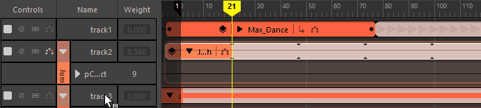
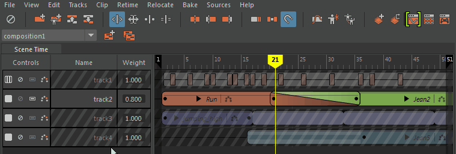

打开时间编辑器“轨迹”(Track)上下文菜单
- 在时间编辑器中，在轨迹的空白区域中单击鼠标右键以查看其他选项。
注： 尽管“轨迹”(Track)上下文菜单中显示的部分选项是所有轨迹的标准选项，但也有一些选项仅当在特定轨迹类型（例如，形状轨迹）上单击鼠标右键时才会出现。
- 添加
-
- 从场景选择中添加动画(Add Animation from Scene Selection)
- 添加内容选自“大纲视图”(Outliner)或“视口”(Viewport)的片段。单击“从场景选择中添加动画”(Add Animation from Scene Selection) >
 ，以打开“将动画添加到时间编辑器”(Add Animation to the Time Editor)选项。另请参见使用时间编辑器片段。
注： 您还可以将文件从“文件”(File)或内容浏览器拖动到时间编辑器中，或者使用时间编辑器的“快速启动”(Quick Start)图标将选定内容添加到场景中。
，以打开“将动画添加到时间编辑器”(Add Animation to the Time Editor)选项。另请参见使用时间编辑器片段。
注： 您还可以将文件从“文件”(File)或内容浏览器拖动到时间编辑器中，或者使用时间编辑器的“快速启动”(Quick Start)图标将选定内容添加到场景中。 - 从场景选择中添加姿势(Add Pose from Scene Selection)
- 使用当前选定对象的值创建一帧片段。选择值基于在通道盒中设置的值。请参见使用时间编辑器匹配姿势。
- 粘贴片段(Paste Clip)
- 将存储在剪贴板上的信息复制到当前时间标记位置处的选定轨迹。
- 移动
- 用于重新组织名单中的轨迹顺序。
注： 仅当名单中存在多个轨迹且已选定某个轨迹时，这些命令才处于活动状态。
-
- 将选定轨迹上移(Move Selected Tracks Up)/将选定轨迹下移(Move Selected Tracks Down)
- 将选定轨迹重新定位在上方或下方。
- 创建(Create)
-
- 动画轨迹(Animation Track)
- 将动画轨迹添加到时间编辑器。选择此菜单选项时，如果轨迹处于选中状态，则会在选定轨迹处添加新轨迹。选择此菜单选项时，如果未选中轨迹，则新轨迹会显示在活动合成的结尾处。有关公用轨迹操作，请参见使用时间编辑器轨迹。
- 若要移除轨迹，请在轨迹上单击鼠标右键，然后从时间编辑器“片段”(Clip)上下文菜单中选择“删除轨迹”(Delete Tracks)。
- 音频轨迹(Audio Track)
- 将音频轨迹添加到时间编辑器。选择此菜单选项时，如果轨迹处于选中状态，则会在选定轨迹处添加新轨迹。选择此菜单选项时，如果未选中轨迹，则新轨迹会显示在活动合成的结尾处。
- 若要移除轨迹，请在轨迹上单击鼠标右键，然后从时间编辑器“片段”(Clip)上下文菜单中选择“删除轨迹”(Delete Tracks)。
- 禁用/单放(Mute/Solo)
-
- 取消禁用轨迹(Unmute Tracks)/取消禁用所有轨迹(Unmute All Tracks)
- 重新激活选定/所有轨迹。
- 单放轨迹
- 通过“单放”(Solo) 可以挑出一个时间编辑器轨迹，以便仅播放该轨迹。这会禁用其他轨迹，使您可以专注于隔离场景中的动画。
-

-
单放轨道
- 在名单中单击相应轨迹的“单放”(Solo)图标 。单放某个轨迹后，时间视图中的剩余轨迹将暗显，且“禁用”(Mute)按钮将变为黄色。
- 若要单放多个轨迹，请按住 Shift 键并选择这些轨迹，然后单击“单放”(Solo)图标。
- 添加到单放轨迹(Add to Soloed Tracks)
-

- 将任何选定轨迹添加到已设置为单放的轨迹。
注： 按住 Shift 键并在时间编辑器的名单(Roster)区域中选择多个轨迹。
- 撤消单放(Undo Soloing)
- 将所有轨迹设置为活动状态。
- 删除轨迹(Delete Tracks)
- 从“轨迹”(Track)视图中删除选定轨迹。